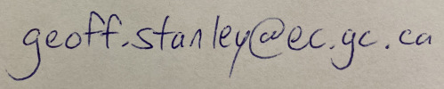

Geoff Stanley Open-source code for Neutral Surfacesis available in MATLAB and in Python. This code can calculate: - topobaric surfaces (currently in MATLAB only) - geostrophic streamfunctions (currently in MATLAB only) - potential density and specific volume anomaly surfaces. The Python code is being actively maintained. It can be used with arbitrary grids, whereas the MATLAB version can only handle rectilinear (e.g. latitude-longitude) grids. |

|
Academic history:
- Banting Postdoctoral Researcher: 2022 - present: School of Earth and Ocean Sciences at the University of Victoria, working with Adam Monahan and James Anstey.
- Postdoc Fellow: 2019 - 2022: School of Mathematics and Statistics at the University of New South Wales, working with Trevor McDougall
- PhD 2018: Atmospheric, Oceanic, & Planetary Physics, University of Oxford, supervised by David Marshall.
- MSc 2013: School of Earth and Ocean Sciences, University of Victoria, supervised by Oleg Saenko and Andrew Weaver.
- BMath 2011: Pure and Applied Mathematics, University of Waterloo
Research Interests:
- Neutral surfaces
- Antarctic Circumpolar Current, dynamics of
- Instability in Geophysical Fluid Dynamics
- Stratospheric polar vortex
- Abyssal meridional overturning circulation
- Transition to turbulence
- Flow around topography
- Lagrangian trajectories
Last updated November 2022